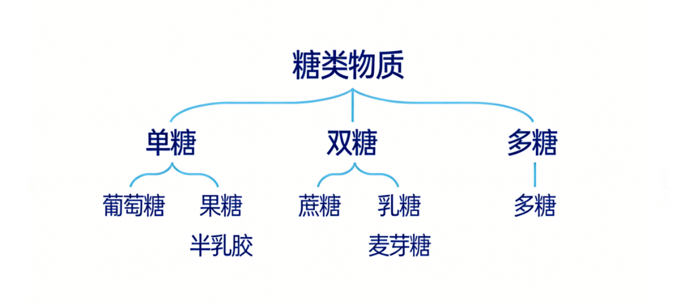
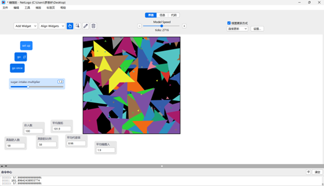
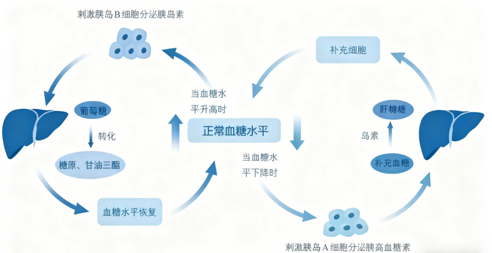
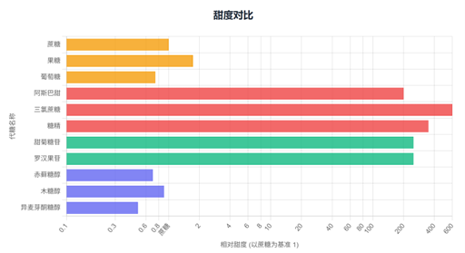
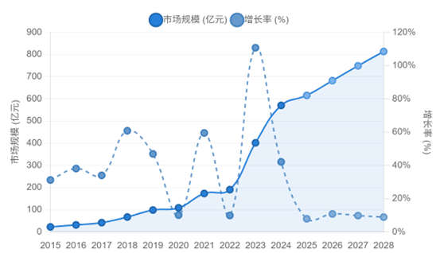
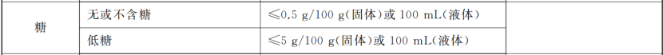

引入
翻开全球的食品账单，糖，无疑是最受欢迎的调味品。根据国际糖业组织的数据，全球食糖消费量数十年来持续攀升，ISO预测，2025/26年度全球糖产量将达到1.806亿吨，较上一年度增加540万吨。这股甜蜜的洪流同样席卷了中国。
以食糖为例，2017-2025年食糖产量总体呈上升趋势，2025年全国产量达到1116.2万吨
图1：2017-2015中国食糖产销图
九成消费者错认"糖"
科信食品与健康信息交流中心发布的《中国消费者糖认知状况及控糖行为调查报告》显示，能准确识别这些含糖配料的消费者不足10%。如蔗糖的识别正确率仅有80%左右，常用的果葡糖浆、蜂蜜、浓缩果汁、果酱的识别正确率均不足50%。
图2：甜味配料的识别错误率

转印自科普中国
那什么是糖呢？
糖类物质是多羟基的醛类或酮类化合物，是人体内产生热能的主要物质。从广义上讲，糖也称碳水化合物，根据其结构和生理作用可分为单糖（葡萄糖、果糖和半乳糖）、双糖（蔗糖、乳糖和麦芽糖等）和多糖。
图3：糖类物质的分类

糖的积极作用
从B站选取两条关于糖的科普视频，爬取视频评论。从评论词云图可以看出"喜欢"这词出现频率较高，对爬取的评论进行情感分析，结果显示负面评论占比38.8%，正面评论占比48.8%，可见大众对糖的情感倾向既有正面，又有负面，那糖有什么积极作用和消极作用呢？
图4：糖类词云图

我们将视线聚焦到多巴胺、心情这些词，大多数评论提到了舒缓心情多巴胺。许多科学研究结果表明适量摄入糖分可以促进多巴胺的分泌，并且糖也有着较好的口感，使人心情愉悦，提高食欲。
许多评论也提到了热量、供能这个词，在大众认知下糖有补充能量的积极作用。科学研究也表明糖分热量高，可产生热能，适量摄入糖分可以为身体的新陈代谢提供能量，补充体力，缓解疲劳感。
此外，词云图还展现了低血糖，科学研究表明对于血糖比较低的人群，适量摄入糖分可以预防低血糖的发生，防止出现全身无力、眩晕、心悸、晕倒等低血糖症状。
糖的消极作用
尽管糖是人体必需的营养物质，但过量摄入，就会带来多方面的危害。从词云图可知，大众也意识到了这点。评论提到了"肥胖"、"脂肪"等词。研究表明，如果过量食用糖，人体不能完全吸收，会在体内过度堆积，转化成脂肪。在net logo"糖-脂肪"模拟模型中用户可以滑动滑块，控制模拟的饮食含糖量，观察脂肪生成量。
图5：糖与脂肪转化图

过多的糖分会转化成脂肪储存在体内，不仅容易造成肥胖，还会增加患心血管疾病风险。
此外，词云图中可见"血糖"科学研究结果表明，糖还影响着胰岛素和血糖。量吃糖会导致体内产生大量的胰岛素，胰岛素一旦分泌失调就会导致血糖得不到控制，诱发糖尿病。
图6：血糖与胰岛素影响示意图

"戒掉"、"害处"等词频繁出现，除了上述提到的消极作用外，过量摄入糖还有以下几个消极作用。
加速衰老：糖化反应在皮肤衰老中扮演重要角色，过量的糖会与蛋白质发生反应，产生晚期糖基化终产物，加速皮肤衰老。此外，糖还会导致胶原蛋白断裂，使皮肤松弛、下垂、出现皱纹和斑点。
龋齿风险：糖会加速口腔细菌繁殖，导致蛀牙和龋齿。含糖饮料的酸性也会侵蚀牙齿，进一步增加患龋齿的风险。吃糖毁掉一口好牙，可能只需要6个月。
其他健康问题：过量摄入糖还与多种癌症风险增加有关，包括食道癌、结肠癌、肝癌、乳腺癌等。此外，还可能加速近视发展、导致骨质疏松、营养不良、甚至增加抑郁症风险。
甜蜜的替代品
随着科学发展与健康知识普及，代糖出现在人们的视野中。那么，到底什么是代糖呢？
代糖，准确来说应该称为甜味剂，是指那些能够赋予食物甜味，但通常不参与或较少参与人体代谢产生热量的物质。
图7：糖产生热量示意图

所以根据其产生热量与否，一般可以将代糖分为营养性甜味剂（代谢后产生较少热量）及非营养性的甜味剂（正常消化不产生热量，不影响血糖指数）两大类。同时也可以分为自然界不存在、通过人工合成的人工代糖，与从植物中提取的天然代糖。
图8：不同糖类甜度对比图

图9：不同糖类热量对比图

图10：不同糖类血糖指数对比图

营养性甜味剂：主要为糖醇类，热量较低，例如木糖醇，甜度接近蔗糖，但一克只产生热量2.4大卡。但赤藓糖醇比较特殊，0卡路里、不升血糖，是糖醇类的唯一的0热量成分。
非营养性甜味剂：非营养性甜味剂中天然甜味剂甜度非常高，可达蔗糖的数百倍，但代谢热量为0，例如甜菊糖（或甜菊糖苷），是从甜菊的干叶中提取的，甜度为蔗糖的200-300倍，摄入不产生热量，经过大量的实验及研究证明，甜菊糖苷无毒无副作用，无致癌物，摄入不影响血糖水平或干扰胰岛素，是一种非常理想的甜味剂。
而人工合成的甜味剂，例如糖精、甜蜜素、阿斯巴甜、安赛蜜等，甜味能达到蔗糖的几百倍或上千倍，食用后不产生热量。由于生产稳定、价格较低、甜度高，广受食品加工业的喜爱。
我国无糖饮料市场从2016年的约32亿元翻升超过4倍达到现今2021年143亿元，其中2018年元气森林等黑马引发市场大爆发，赤藓糖醇凭借零热量和健康安全性能迅速成为天然代糖中的新贵，同时随着《健康中国2030》纲要发布，"减糖"议题正式走向大众餐桌，在政策支持下无糖饮料市场迎来迅速发展期，2017年至2021年CAGR可达36.1%，属于高速发展期，是因为越来越多企业在无糖饮料领域发力，不论是传统还是新兴企业竞相冒头上新各类无糖饮品，同时其线上销量不断创新高，例如元气森林2020年5月销售额高达到2.6亿元。
无糖化、低糖化渐成全球健康饮食新标准，无糖饮料行业得到快速发展。数据显示，2023年中国无糖饮料行业市场规模达到401.6亿元，同比增长101.2%。预计未来几年将持续放量增长，到2028年市场规模有望达815.6亿元。
图11：2015-2025无糖饮料行业市场规模图

图12：代糖论文词云图

图13：b站词云图

图14：小红书词云图

无糖饮料的真相
"无糖"的法律定义与量化标准
无糖≠完全无糖：
中国"无糖"国家标准是GB28050《食品安全国家标准预包装食品营养标签通则》，核心要求是食品中100g(固体)或100ml(液体)食品中糖含量≤0.5g。
零卡≠无能量
中国"零卡"国家标准的核心是：食品能量≤17kJ/100g(固体)或100mL(液体)，且脂肪供能比≤50%时，可标示为"无能量"或"零卡"。这意味着所谓"零卡"食品并非完全没有能量，只是能量值极低，在营养学上可忽略不计。
国标之下："无糖""零卡"从非绝对"无"，仅为"低阈值"达标
根据我国《预包装食品营养标签通则》（GB28050-2011）及最新《食品安全国家标准预包装食品标签通则》（GB7718-2025）问答要求，"无糖"的核心标准是每100g固体或100ml液体中糖含量≤0.5g，"零卡"则要求能量≤17kJ/100ml（或4千卡），而"0蔗糖"无明确国标约束，仅代表不含蔗糖，不排除含果糖、葡萄糖等其他糖类。
图15：国家卫生健康委.《食品安全国家标准预包装食品营养标签通则》-1

图16：国家卫生健康委.《食品安全国家标准预包装食品营养标签通则》-2

国家卫生健康委.《食品安全国家标准预包装食品营养标签通则》（GB28050-2011）问答(修订版)[EB/OL].(2014-02-26)[2025-11-24].
调研分析结果
在健康消费浪潮下，"无糖"标签已成为市场饮料货架的流量密码。我们选取北京交通大学校内超市的18款无糖饮料展开调研。多数学生也许将无糖饮料等同于"低风险""更健康"的选择，但结合18款校内在售无糖饮料的数据分析、权威健康研究结论及食品标签规范政策来看，"无糖"背后的真相远比想象中复杂，它既不是"零添加"的代名词，更不等于无健康风险，反而藏着代糖滥用、标签误导等多重消费陷阱。
（一）真相一：无糖≠无代糖
通过K-Means聚类分析可知，校内18款无糖饮料可依据"代糖种类数量""糖含量"划分为3大阵营，而这三类阵营的健康风险差异，恰好对应了代糖行业的核心争议：
无代糖无糖组（占比39%）：以三得利乌龙茶、东方树叶茉莉花茶为代表，代糖种类数量=0、糖含量=0g/100ml，完全依赖原料风味，是真正"零甜味剂添加"的健康选项。
天然+人工代糖组（占比28%）：以元气森林气泡水为代表，采用赤藓糖醇（天然）+三氯蔗糖（人工）复配，既迎合"天然"的消费心理，又靠人工代糖强化甜味。
单一人工代糖组（占比33%）：以零度可口可乐、大窑嘉苹为代表，仅依赖安赛蜜、阿斯巴甜等人工代糖，成本更低、甜味更浓。
图17：代糖种类与无糖饮料品牌聚类

结合关联规则分析，代糖使用还呈现品牌固定偏好：可口可乐系列偏好阿斯巴甜+安赛蜜（置信度1.00），元气森林偏好赤藓糖醇+三氯蔗糖（置信度0.60）——但这种偏好是成本与口感的权衡，而非健康考量。澳大利亚研究证实长期饮用含代糖的无糖饮料，糖尿病风险会提升38%，其中人工代糖的风险显著高于天然代糖。
图18：代糖使用关联图

（二）真相二："0糖0卡"等标签标注有误导陷阱
标注"0糖0卡""0糖0脂"的饮品，100%含人工代糖；仅标注"无糖"的饮品中，75%属于无代糖组。
使用决策树模型后发现，标"0卡"（0.478）成为判断是否含人工代糖最重要的特征，其次是标"0脂"（0.273）、标"0能量"（0.212）。从各标签类型的含人工代糖比例来看，低糖0脂肪、0糖0脂肪等标签的饮料100%含有人工代糖，而0糖0脂的饮料有50%含有人工代糖，无糖和0糖饮料有25%含有人工代糖。
图19：代糖标签决策树

图20：标签类型重要性得分条形图

在人们眼中的健康标签，本质是人工代糖的隐形告知书。多数人对无糖毫无认知，甚至将"0糖0卡"等同于无添加、更安全。值得警惕的是饮料品牌标注的不规范现象，比如数据中，果子熟了电解质水含人工代糖却未标"0卡"，与同类产品逻辑相悖，而这类片面真实的标注，正符合《食品安全国家标准预包装食品标签通则》（GB7718-2025）中"模糊表述"的风险范畴。
世界卫生组织表明，非糖甜味剂无法降低肥胖、糖尿病风险，每天多喝250ml人工代糖饮料，肥胖风险会增加21%，对想要控重、控糖的人们而言，误以为健康的长期摄入，反而可能陷入越喝越胖的恶性循环。
WHOadvisesnottousenon-sugarsweetenersforweightcontrolinnewlyreleasedguideline[EB/OL].(2023-05-15)[2023-05-117].
（三）真相三：代糖不是"甜味解药"，长期摄入有多重健康隐患
对于糖尿病患者或需要控制血糖的人群而言，代糖大多不参与体内胰岛素代谢，对血糖波动影响较小，且人体摄入后产生的热量极低或不产生热量，同时又能满足人们对"甜味"的需求，短期内用代糖饮料代替含糖饮料确实有利于控制体重。
减少龋齿风险，代糖不能被口腔中的微生物发酵，有些代糖（如木糖醇）甚至对牙齿有益，有助于预防龋齿。
很多人选无糖饮料是为了规避糖的危害，但代糖是甜味替代品，而非健康解药。从甜味剂使用频率图可见，安赛蜜（出现5次）、赤藓糖醇（出现4次）、三氯蔗糖（出现3次）是校内无糖饮料的使用最多的代糖，且人工代糖的使用频率远高于天然代糖，而无代糖组仅占39%，印证了安全选项稀缺的现状。多数产品的无糖，只是用代糖替代蔗糖的营销话术。
图21：甜味剂在产品中的使用频率

生理机制层面：世界卫生组织在2023年的相关研究中明确提醒，人工甜味剂的"假甜信号"无法被大脑准确识别，反而会激发人体嗜甜本能。这种信号干扰会导致后续对高糖食物的偏好显著增加，最终形成"越喝代糖、越想吃糖"的饮食失衡状态，且摄入量与这种失衡程度呈正相关。
健康风险层面：权威医学期刊《Neurology》2025年发表的一项长达8年的前瞻性研究提供了关键数据，该研究纳入12772名成年人，结果显示每天摄入约1罐无糖汽水（高代糖摄入组）的人群，认知功能衰退速度比低摄入组快62%，相当于大脑衰老加速1.6年，且这种风险在60岁以下人群中更明显；人工代糖破坏肠道菌群的机制也已被证实，2014年《Nature》的研究发现，糖精、三氯蔗糖等人工甜味剂会引发肠道菌群失调，进而导致葡萄糖耐受不良，这是2型糖尿病的重要前兆；即便是被认为相对安全的天然代糖赤藓糖醇，也存在明确健康风险——《NatureMedicine》2023年的研究表明，其血液水平与主要不良心血管事件（含血栓）发生风险显著相关，美国科罗拉多的研究进一步揭示，一瓶常见无糖饮料中的赤藓糖醇剂量（约30g），就会损伤脑微血管内皮细胞功能，增加缺血性卒中风险。
科学控糖
当我们在谈论"控糖"时，究竟在对抗什么？一份基于数据的硬核实操指南
看清"糖"和"代糖"的甜蜜陷阱仅仅只是开始，如何真正降低糖在我们摄入的营养成分中的占比是更为棘手的问题。
很有可能，这已经不是你第一次下定决心要控糖减糖，可是面对失望沮丧的心情、盛情邀约的同事、温暖馨香的面包店，似乎一切努力都有一点徒劳无功。
追寻健康的旅程向来不应该是痛苦不堪的，为了找到那个"不痛苦也能赢"的解法，我们爬取了数万条社区讨论，模拟了人体代谢模型，甚至训练了一棵帮你逛超市的决策树。我们不希望你再因为大快朵颐地享受美食而苛责自己，我们会用真实的数据告诉你，"控糖"不是一个关乎意志力的故事，"控糖"的诀窍也并不在于"自律即自由"的鸡汤，而在于数据的底层逻辑。
痛点粉碎：你戒不掉糖，真不是因为"意志力差"
在小红书、豆瓣和各类"戒糖打卡群"或者"控糖失败"的贴子里，我们抓取了 3000+ 条关于"暴食"、"复吃"和"失败"的真实吐槽。
当我们将这些文字通过 NLP（自然语言处理） 技术进行情感分析和词频提取后，一个反直觉的真相浮出水面：绝大多数人的失败，并不是因为是个大馋丫头，吃得停不下来，而是因为对"糖"的危害从根本上认知不足。
图22：控糖失败的原因

因此，这篇文章对你来说至关重要，对波动的血糖更多的了解，会让你面对糖时更加谨慎。
图23：控糖人群画像

除此以外，在雷达画像图中，我们发现，生理成瘾是明显较高的控糖失败人群类型，我们的意志力是有限资源。
不论是生理成瘾，亦或是情绪补偿，都是我们必须正视的问题，而并非亟待克制的恶念。面对生理成瘾，最简单的方式，就是在饥饿时选择"高脂肪""高蛋白"的美味小零食来代替"高糖"零食。无论是脂香充盈的坚果还是丝滑浓腻的榛子巧克力，它们的味道绝对不逊色于碳水。
当想要吃甜品、食物来缓解情绪时，同样可以使用替代法则，除此以外，运动是更有效的缓解情绪的办法，大量研究证明，运动产生的多巴胺比食物产生的多巴胺持续时间长3倍以上。不需要多大的场地，下次难过时，做做深蹲，而不是立马点上一份火鸡面，也许一次尝试就能为你打开持久的新局面。
慧眼识糖：超市里的"算法生存指南"
小时候杂志盛行的年代，也许我们早就读过"超市的心机布置"这篇流传甚广的文章。很多时候，走进超市，我们就成了精心设计的动线目标的人群，开始一样又一样地往购物车加装自己不需要的东西。
如何在超市繁多的食品中选择健康美味的食品？我们训练了一棵帮你逛超市的决策树，只要拍照上传食品配料表，它就会反馈给这是否低碳水，以及是否含有隐形糖。
图24：决策树模型

饮食重构：寻找购物篮里的"黄金组合"
英国医学家克里威（T.L. Cleave）提出了著名的"克里威20年法则"：人们如果一直将精制碳水化合物作为主食，约20年后，糖尿病、心脑血管疾病就会如期而至
科学控糖不是"不吃"，而是"换个组合吃"。我们利用 Apriori 关联规则算法，分析了大量"低碳水/生酮"高分食谱，挖掘食材之间的共现关系（Co-occurrence），绘制出了一张"控糖 CP 网络图"。
图25：控糖cp网络图

如果图片太复杂，只记住三个数字"211"就可以了，意思是2份蔬菜、1份脂肪（蛋白质）、一份碳水。
一般来说，碳水化合物占人体一天营养摄入30%一下最好，当适应没什么问题后，可以逐渐降低到20%。
别害怕吃油。数据关联规则告诉我们，适量的优质脂肪（橄榄油、鱼油、牛油果）能显著增加饱腹感，反而让你减少对糖的渴望。人体主要能量来源是碳水化合物和脂肪，想要调整饮食结构，降低碳水的同时，一定要增加脂肪，肥肉也要吃。这听起来和我们常听的"油腻饮食对身体不好"有很大出入，但是，很多高血压高血脂等疾病，恰恰不是因为脂肪吃得多，而是碳水吃得过多导致的。
身体的未来：一场关于"内稳态"的仿真模拟
为了让你更加直观地感受到高碳水饮食和低碳水饮食的区别，我们用 NetLogo 搭建了一个微观仿真模型，带你进入血管内部看一看。
模型 A（传统高碳水饮食）：
当我们投入大量代表"葡萄糖"的红球时，系统瞬间报警。为了维持平衡，代表"胰岛素"的白色箭头疯狂涌入。
图26：netlogo模型图-1

结果： 血糖像过山车一样暴涨暴跌。在波谷期，系统发出了红色的"饥饿信号"。这就解释了为什么你吃得越多，饿得越快——你陷入了"胰岛素抵抗"的恶性循环。